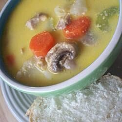

Super Soup

This is a very hearty, cheesy soup.
Ingredients
2 turkey legs
1 cup diced celery
1 ½ cups diced potatoes
2 (10.75 ounce) cans condensed cream of chicken soup
1 pound processed cheese, cubed
1 cup diced carrots
1 cup diced onion
1 (16 ounce) package frozen chopped broccoli
4 cups water
Steps
Boil turkey in water until tender. Cut up meat, and add back into turkey broth.
Add onions, potatoes, carrots, and celery. Boil until tender.
Add frozen vegetables, and cook 15 minutes more.
Stir in cream of chicken soup and cubed cheese. Cook over medium-low heat until cheese melts, stirring often.
Nutrition facts of ceviche
6% Total Fat 3.9g.
11% Saturated Fat 2.1g.
20% Sodium 468mg.
4% Total Carbohydrates 13g.
19% Dietary Fiber 4.8g.
Sugars 5.1g.
Protein 1.8g.